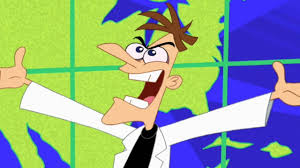

Dr.Doofenshmirtz
El Dr. Heinz Doofenshmirtz es el némesis recurrente de Perry. Es un científico loco con un corazón sorprendentemente bondadoso y algo torpe. Aunque siempre está ideando algún inator para lograr sus objetivos malvados (como conquistar el área Limítrofe), la mayoría de sus planes terminan fallando gracias a la intervención del Agente P. A pesar de ser enemigos, su relación tiene un toque amigable e incluso cariñoso en ocasiones.